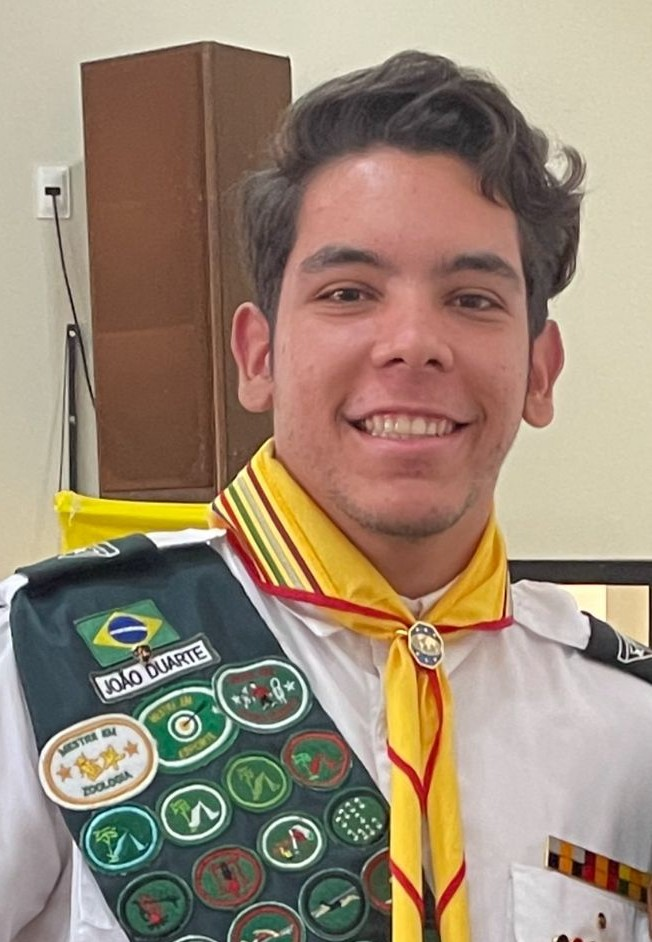
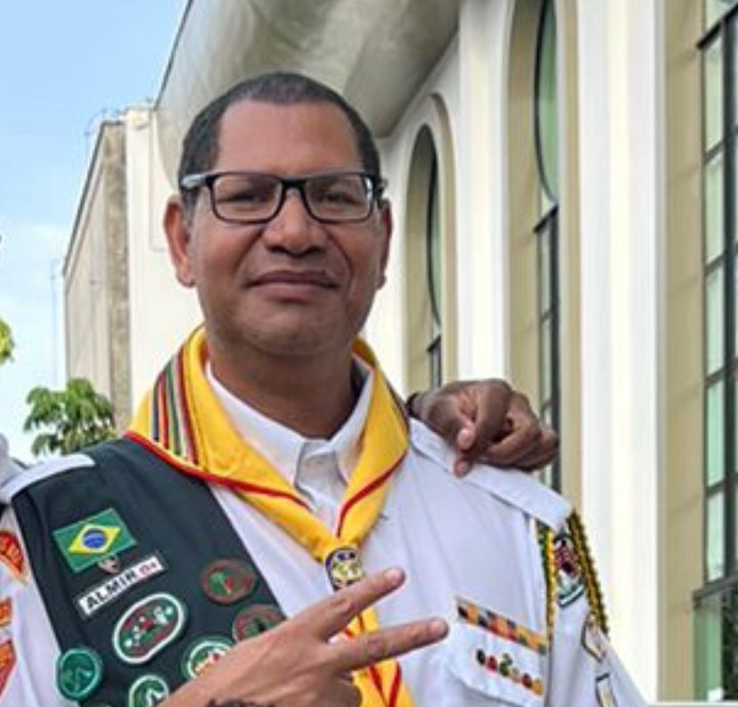
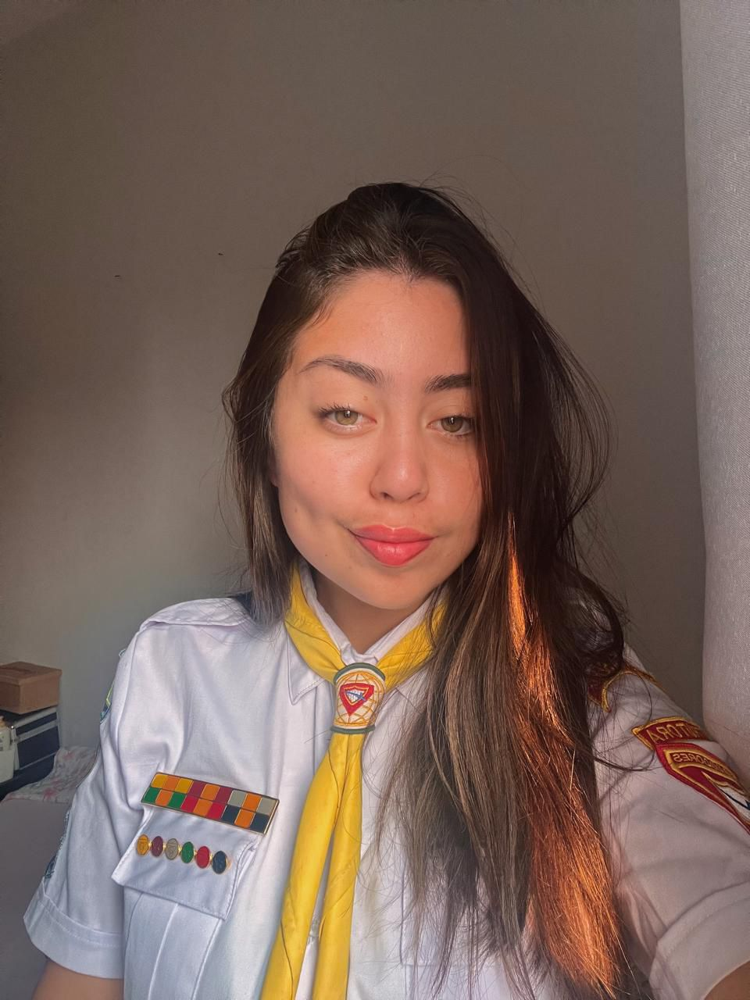

Nossa Liderança

João Duarte
Diretor
Responsável por coordenar e liderar todas as atividades do clube, mantendo o foco em nossos objetivos.
Falar no WhatsApp
Almir Rogério
Secretário
Cuida da documentação de todo o clube, frequência, seguros e comunicação oficial.
Falar no WhatsApp

Ana Yugawa
Vice-Diretor
Auxilia todos e coordena as atividades práticas do projeto.
Falar no WhatsApp